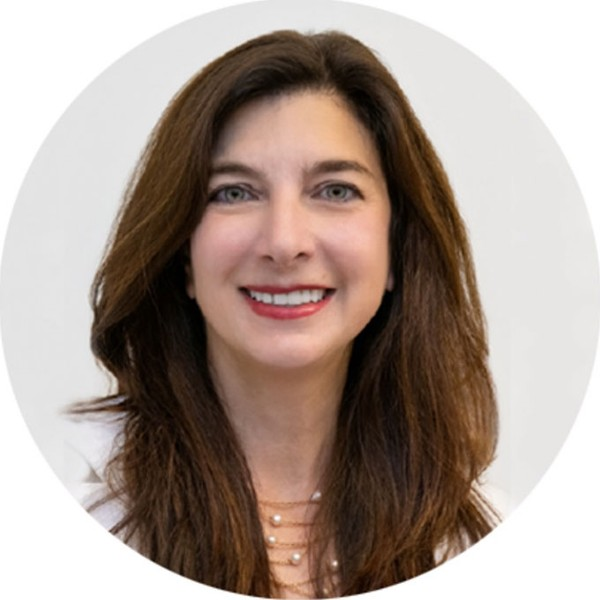

Anna Nekoranec
Co-Founder & CEO
Anna co-founded Align in 2014 with Robert Blabey and a leading Florida-based family to address the ultra high net worth alternative investment market, and launched Align's first fund with a single LP in 2019. Prior to Align, Anna spent over 20 years working with ultra high net worth families on direct investments and at private equity and venture capital firms including Investor Growth Capital, the Safeguard International Fund and CMS Companies. She also worked at the Brookings Institution and the NASD. Anna holds an MBA from Wharton and a BA from the University of Virginia. She is a contributing author to The Complete Direct Investing Handbook and a co-author of How to Buy a Business: Entrepreneurship through Acquisition. Anna has served on the Board of Trustees for the Jefferson Scholarship Foundation, chaired the Walentas Scholarship at the University of Virginia, serves on the Investment Committee for Sarasota Memorial Hospital, and is a Fortune Most Powerful Women in the World Conference Delegate.